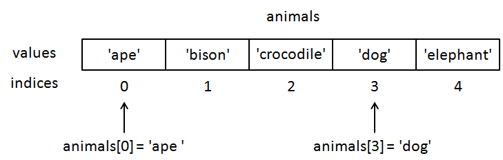

by Colm Sloan
In Python, a list is a data structure containing an ordered sequence of values where each value is associated with an index denotating the values position in the sequence.
x = [3, "apples", "cats", 4.91, "apples"]
print(x) # [3, 'apples', 'cats', 4.91, 'apples']
animals = ["ape", "bison", "crocodile", "dog", "elephant"]

animals = ["ape", "bison", "crocodile"]
print(animals) # ['ape', 'bison', 'crocodile']
print(animals[0]) # 'ape'
print(animals[1]) # 'bison'
print(animals[2]) # 'crocodile'
numbers = [3, 7, 4, 9, 2]
print(numbers) # [3, 7, 4, 9, 2]
print(numbers[0]) # 3
print(numbers[1]) # 7
print(numbers[2]) # 4
print(numbers[3]) # 9
print(numbers[4]) # 2
greeting = "hello"
print(greeting) # 'hello'
print(greeting[0]) # 'h'
print(greeting[1]) # 'e'
print(greeting[2]) # 'l'
print(greeting[3]) # 'l'
print(greeting[4]) # 'o'
numbers = [3, 7, 4, 9, 2]
x = numbers[1] # 7
y = numbers[3] # 9
print(x + y) # 16
numbers = [3, 7, 4, 9, 2]
x = 2
y = numbers[x] # 4
print(z) # 4
numbers = [3, 7, 4, 9, 2]
print(numbers[-1]) # 2
animals = ["ape", "bison", "crocodile"]
print(animals[0]) # 'ape'
print(animals[3]) # Error: list index out of range
numbers = [3, 7, 4, 9, 2]
print(numbers[-6]) # crash - too low an index
print(numbers[5]) # crash - too high an index
numbers = [3, 7, 4, 9, 2]
print(len(numbers)) # 5
numbers = [3, 7, 4, 9, 2]
first = numbers[0]
last = numbers[len(numbers) - 1]
print(first) # 3
print(last) # 2
animals = ["ape", "bison", "crocodile"]
i = 0
while i < len(animals):
print(animals[i])
i += 1
animals = ["ape", "bison", "crocodile"]
for animal in animals:
print(animal)
numbers = [3, 7, 4, 9, 2]
i = 0
total = 0
while i < len(numbers):
total += numbers[i]
print("The total is", total)
numbers = [3, 7, 4, 9, 2]
for number in numbers:
total += number
print("The total is", total)
numbers = [3, 7, 4, 9, 2]
total = sum(numbers)
print("The total is", total)
animals = ["ape", "bison", "crocodile", "dog", "elephant"]
print(animals[0:2]) # ['ape', 'bison']
print(animals[1:4]) # ['bison', 'crocodile', 'dog']
print(animals[2:2]) # []
animals = ["ape", "bison", "crocodile", "dog", "elephant"]
print(animals[0:-1]) # ['ape', 'bison', 'crocodile', 'dog']
print(animals[1:-2]) # ['bison', 'crocodile']
animals = ["ape", "bison", "crocodile", "dog", "elephant"]
print(animals[2:]) # ['crocodile', 'dog', 'elephant']
print(animals[:2]) # ['ape', 'bison']
print(animals[:-1]) # ['ape', 'bison', 'crocodile', 'dog']
print(animals[-1:]) # ['elephant']
print(animals[:]) # ['ape', 'bison', 'crocodile', 'dog', 'elephant']
greeting = "hello"
print(greeting[2:]) # 'llo'
print(greeting[:2]) # 'he'
print(greeting[:-1]) # 'hell'
print(greeting[-1:]) # 'o'
print(greeting[:]) # 'hello'
game = [['x', 'o', 'x'],
['o', 'x', 'x'],
['x', 'o', 'o']
]
csv_data = "name,credit_card_num,cvv\n
Fiona Thompson,5125066709122624,629\n
Fuller Carr,345575349302967,893\n
Cherokee Valentine,5119477905281811,381\n
Cailin Hyde,5152349040773695,356\n
Mariko Velez,343307525152341,911"
csv_data_lists = [['name','credit_card_num','cvv'],
['Fiona Thompson','5125066709122624','629'],
['Fuller Carr','345575349302967','893'],
['Cherokee Valentine','5119477905281811','381'],
['Cailin Hyde','5152349040773695','356'],
['Mariko Velez','343307525152341','911']]
csv_data = [['name','credit_card_num','cvv'],
['Fiona Thompson','5125066709122624','629'],
['Fuller Carr','345575349302967','893'],
['Cherokee Valentine','5119477905281811','381'],
['Cailin Hyde','5152349040773695','356'],
['Mariko Velez','343307525152341','911']]
# the first element of the first list
row = 0
column = 0
print(csv_data[row][column])
# the second element of the forth list
row = 3
column = 1
print(csv_data[row][column])
csv_data = [['name','credit_card_num','cvv'],
['Fiona Thompson','5125066709122624','629'],
['Fuller Carr','345575349302967','893'],
['Cherokee Valentine','5119477905281811','381'],
['Cailin Hyde','5152349040773695','356'],
['Mariko Velez','343307525152341','911']]
for row in csv_data:
for cell in row:
print(cell)
animals = ["ape", "bison", "crocodile"]
animals.append("dog")
animals.append("elephant")
print(animals) # ['ape', 'bison', 'crocodile', 'dog', 'elephant']
numbers = [38, 91, 22]
numbers.append(44)
numbers.append(7)
print(numbers) # [38, 91, 22, 44, 7]
animals = ["ape", "bison", "crocodile"]
more_animals = ["dog", "elephant"]
animals.append(more_animals)
print(animals) # ['ape', 'bison', 'crocodile', ['dog', 'elephant']]
animals = ["ape", "bison", "crocodile"]
more_animals = ["dog", "elephant"]
animals.extend(more_animals)
print(animals) # ['ape', 'bison', 'crocodile', 'dog', 'elephant']
animals = ["ape", "bison", "crocodile", "dog", "elephant"]
for animal in animals:
animal = "zebra"
print(animals) # ['ape', 'bison', 'crocodile', 'dog', 'elephant']
animals = ["ape", "bison", "crocodile", "dog", "elephant"]
animals[0] = "ant"
print(animals) # ['ant', 'bison', 'crocodile', 'dog', 'elephant']